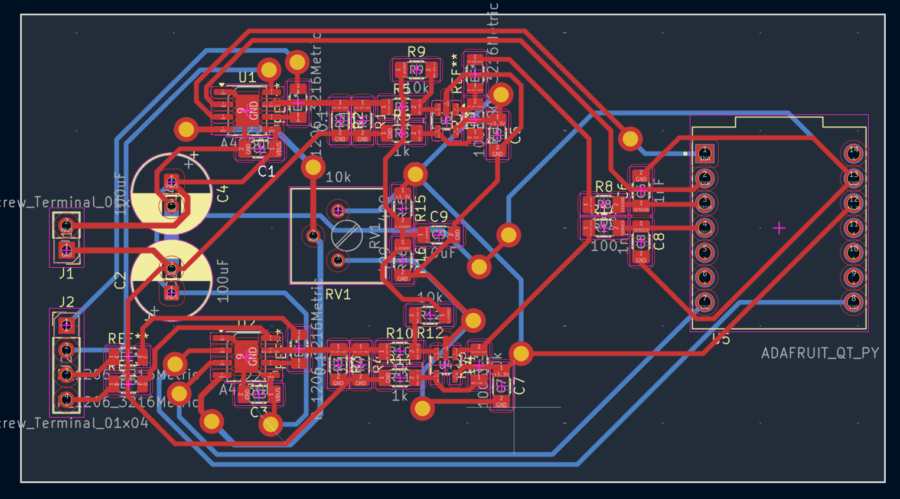

For this assignment, I attempted to make a stepper motor driver with the PCB cnc mill, post processing it by assembling the board. I used the A4950 h-bridge motor drivers as the core of the board, with op-amps attached to each one's outputs to measure phase current. Because of the complex nature of the board, it was double sided, so I learned how to use the copper rivets as vias in KiCAD. To properly machine the double sided board I used gerber2img and flippcb. When milling the PCB, to get into the tighter spots of my layout, I used a v-bit and the 1/64th preset but setting endmill diameter to 0.3mm in bitrunner. There are some things I would do differently if I were to do this again, I assumed for some of the footprints that I could connect traces to both the top and bottom pads while forgetting the through-holes aren't plated so I had to manually solder both sides, which was finnicky. Instead, I would use more copper rivets to create plated through holes or I would only connect footprints on one side to aid assembly. Also, I forgot to attach a ground lead so I had to do that after the fact. It worked okay, and I got signal, but there was some issues preventing it from effectively driving a motor, perhaps code configuration. Below are some images, videos, and accompanying statements about the design and fabrication process of this circuit board.
Design of PCB in KiCAD, download design and gerbers here.

Milling the PCB
Post-processing and testing of PCB, first I installed the copper rivets into the via holes, then I used the spring center punch to punch the other sides open, then flattened with a hammer, and that worked really well. Then I soldered the other parts to the PCB.
Here are the settings I used to make the vias in KiCAD:
//PCB Mill via settings
Via Size: 2.54mm
Via Hole: 1.59mm